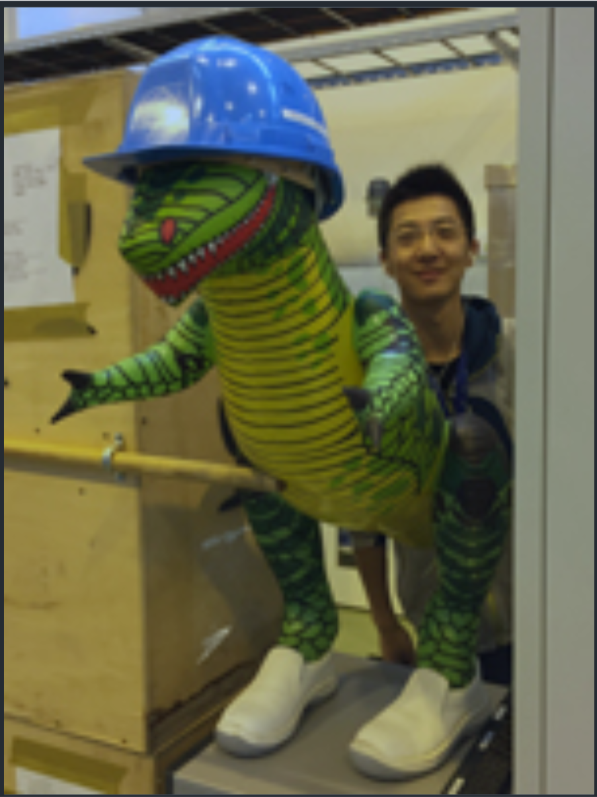

Jiachen Zhao
School of Nuclear Science & Technology, Lanzhou University
- Email: jiachen.zhao@cern.ch
- Email: zhaojch2014@lzu.edu.cn
- Tel: +86-186-9313-6446
(Nov. 2016 - Now)
School of Nuclear Science and Technology, Lanzhou University
Mentor:Prof. Bitao Hu and Prof. Zuoye Liu
Femtosecond lasers can produce 391 nm and 428 nm stimulated emissions in the direction of laser propagation in air or pure nitrogen, which provides a possibility for the generation of cavityless lasers. This project uses the femtosecond laser experiment platform of the Institute of Nuclear Science and Technology of Lanzhou University to measure the properties of 391nm stimulated laser in air plasma and nitrogen plasma and explore the experimental scheme to produce the strongest 391nm lasers.
(Nov. 2015 - Nov. 2016)
School of Nuclear Science and Technology, Lanzhou University
Mentor: Prof. Yuhong Li
Gd2Zr2O7 pyrochlore has excellent Anti-radiation performance and it is a potential material to solidify
nuclear waste. The purpose of the study is to investigate structural, eletronic and solution properties of Pu immobilization in Gd2Zr2O7 pyrochlore using DFT+U caculation. This study can provide more basic data
and theoretical basis for experimental research and application of the next-generation solidified material.
(Apr. 2016 - Dec. 2016)
School of Nuclear Science and Technology, Lanzhou University
Mentor: Prof. Yuhong Li
Crystal structures are very different from the atomic structure in the gaseous state, so the high-order harmonic generation (HHG) from the crystal irradiated by an in intense laser is also different from that of an atom exposed to a strong laser field. By simulating the dynamics of a single active electron in periodic potentials, we studied the HHG in crystal.
(Apr. 2015 - Dec. 2015)
School of Nuclear Science and Technology, Lanzhou University
Mentor: Prof . Fusheng Yu
Heavy flavor meson is a class of mesons containing heavy quarks, and their decay properties are important frontiers in particle physics. This project used ROOT to calculate various D → PP mesons decay process and studied D → PP decay branch ratio. This program can use experimental data to fit various parameters of the theoretical model of each process, with obtainable error. Moreover, the results can be analyzed theoretically. This general program has been used as an open source for particle physics workers.